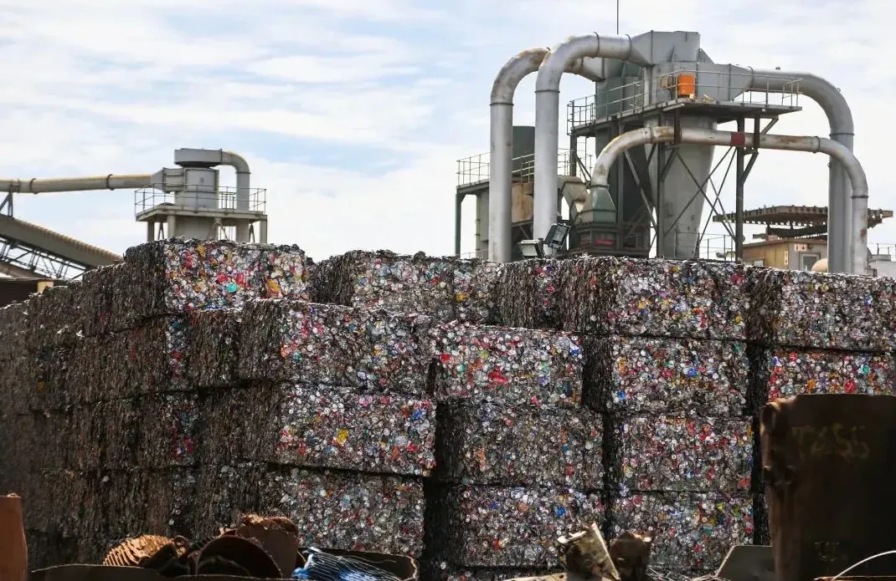

处置成本高，去向受限。Costly to dispose of, nowhere to go.
低值废塑料、复合包装、废旧纺织物与混合有机固废持续产生，组分复杂、污染度高。填埋、焚烧发电和物理回收都无法覆盖低值料，其中的碳资源没有被回收。
Low-value plastics, composite packaging, textiles and mixed organic waste keep coming — complex and contaminated. Landfill, incineration and mechanical recycling can't handle low-grade material, and its carbon goes unrecovered.